# 首先加载必要的包
library(tidyverse)
library(palmerpenguins)
# 创建新列：计算每只企鹅的体重与体长的比值
penguins <- penguins %>%
mutate(weight_length_ratio = body_mass_g / bill_length_mm)
# 修改现有列：将体重从克转换为千克
penguins <- penguins %>%
mutate(body_mass_kg = body_mass_g / 1000)第三周：描述性统计：数据探索与可视化
本周学习目标
- 学习使用
dplyr和tidyr包进行更高级的数据清洗和整理 - 掌握
ggplot2包基本语法，绘制常用数据可视化图表 (直方图、散点图、箱线图) - 学习美化
ggplot2图形，添加标题、标签、修改颜色等 - 了解数据可视化在数据探索中的作用，通过可视化发现数据规律
- 综合运用
dplyr,tidyr,ggplot2进行完整的数据探索和可视化分析
第五次课：数据清洗进阶、可视化初步
dplyr 包：数据清洗和预处理进阶
在第二周，我们学习了 dplyr 包的 select() 和 filter() 函数，用于列选择和行筛选。dplyr 包还提供了很多其他强大的函数，可以帮助我们更高效地进行数据清洗和预处理。
mutate() 函数： 创建新列或修改现有列
mutate() 函数可以基于现有列进行计算，创建新的列，或者修改已有的列。
使用技巧
- 创建新列:
mutate()最常用的功能是创建新列，可以基于现有列进行各种计算，例如加减乘除、取对数、标准化等。 - 修改现有列:
mutate()也可以用于修改现有列的值，例如将单位转换、数据类型转换等。 - 创建多个列:
mutate()可以同时创建多个新列，只需在函数中指定多个赋值语句即可。 - 条件创建列: 结合
if_else()或case_when()函数，可以根据条件判断创建不同的列值。 - 链式操作:
mutate()可以和dplyr包的其他函数 (如select(),filter(),group_by(),summarise()) 灵活组合使用，实现复杂的数据处理流程。 - 保持数据框结构:
mutate()不会改变数据框的行数，只会增加或修改列。
arrange() 函数： 排序数据
arrange() 函数可以按照指定的列对数据进行排序，可以升序，也可以降序。
# 按企鹅体重降序排序
penguins %>%
arrange(desc(body_mass_g))# A tibble: 344 × 10
species island bill_length_mm bill_depth_mm flipper_length_mm body_mass_g
<fct> <fct> <dbl> <dbl> <int> <int>
1 Gentoo Biscoe 49.2 15.2 221 6300
2 Gentoo Biscoe 59.6 17 230 6050
3 Gentoo Biscoe 51.1 16.3 220 6000
4 Gentoo Biscoe 48.8 16.2 222 6000
5 Gentoo Biscoe 45.2 16.4 223 5950
6 Gentoo Biscoe 49.8 15.9 229 5950
7 Gentoo Biscoe 48.4 14.6 213 5850
8 Gentoo Biscoe 49.3 15.7 217 5850
9 Gentoo Biscoe 55.1 16 230 5850
10 Gentoo Biscoe 49.5 16.2 229 5800
# ℹ 334 more rows
# ℹ 4 more variables: sex <fct>, year <int>, weight_length_ratio <dbl>,
# body_mass_kg <dbl># 按企鹅种类升序、体重降序排序
penguins %>%
arrange(species, desc(body_mass_g))# A tibble: 344 × 10
species island bill_length_mm bill_depth_mm flipper_length_mm body_mass_g
<fct> <fct> <dbl> <dbl> <int> <int>
1 Adelie Biscoe 43.2 19 197 4775
2 Adelie Biscoe 41 20 203 4725
3 Adelie Torgersen 42.9 17.6 196 4700
4 Adelie Torgersen 39.2 19.6 195 4675
5 Adelie Dream 39.8 19.1 184 4650
6 Adelie Dream 39.6 18.8 190 4600
7 Adelie Biscoe 45.6 20.3 191 4600
8 Adelie Torgersen 42.5 20.7 197 4500
9 Adelie Dream 37.5 18.5 199 4475
10 Adelie Torgersen 41.8 19.4 198 4450
# ℹ 334 more rows
# ℹ 4 more variables: sex <fct>, year <int>, weight_length_ratio <dbl>,
# body_mass_kg <dbl>
使用技巧
- 单列排序和多列排序:
arrange()可以指定一个或多个列进行排序，实现单条件排序和多条件排序。多列排序时，先按第一列排序，再在第一列相同的情况下按第二列排序，以此类推。 - 升序和降序: 默认升序排序，使用
desc()函数可以实现降序排序。 - 缺失值处理:
arrange()默认将缺失值 (NA) 排在最后。 - 保持数据框结构:
arrange()不会改变数据框的列数和行数，只是改变行的顺序。 - 数据探索和报告中使用:
arrange()常用于数据探索阶段，例如找出评分最高的电影、票房最高的电影等。在生成报告时，排序后的数据表格更易于阅读和理解。 - 为后续操作准备数据: 排序后的数据可以为后续的数据分析和可视化提供便利，例如绘制折线图、计算累计值等。
rename() 函数： 重命名列名
rename() 函数可以修改数据框的列名，使其更易于理解和使用。
# 将列名 bill_length_mm 重命名为 beak_length
penguins %>%
rename(beak_length = bill_length_mm)# A tibble: 344 × 10
species island beak_length bill_depth_mm flipper_length_mm body_mass_g sex
<fct> <fct> <dbl> <dbl> <int> <int> <fct>
1 Adelie Torger… 39.1 18.7 181 3750 male
2 Adelie Torger… 39.5 17.4 186 3800 fema…
3 Adelie Torger… 40.3 18 195 3250 fema…
4 Adelie Torger… NA NA NA NA <NA>
5 Adelie Torger… 36.7 19.3 193 3450 fema…
6 Adelie Torger… 39.3 20.6 190 3650 male
7 Adelie Torger… 38.9 17.8 181 3625 fema…
8 Adelie Torger… 39.2 19.6 195 4675 male
9 Adelie Torger… 34.1 18.1 193 3475 <NA>
10 Adelie Torger… 42 20.2 190 4250 <NA>
# ℹ 334 more rows
# ℹ 3 more variables: year <int>, weight_length_ratio <dbl>, body_mass_kg <dbl># 同时重命名多列
penguins %>%
rename(beak_length = bill_length_mm, beak_depth = bill_depth_mm)# A tibble: 344 × 10
species island beak_length beak_depth flipper_length_mm body_mass_g sex
<fct> <fct> <dbl> <dbl> <int> <int> <fct>
1 Adelie Torgersen 39.1 18.7 181 3750 male
2 Adelie Torgersen 39.5 17.4 186 3800 female
3 Adelie Torgersen 40.3 18 195 3250 female
4 Adelie Torgersen NA NA NA NA <NA>
5 Adelie Torgersen 36.7 19.3 193 3450 female
6 Adelie Torgersen 39.3 20.6 190 3650 male
7 Adelie Torgersen 38.9 17.8 181 3625 female
8 Adelie Torgersen 39.2 19.6 195 4675 male
9 Adelie Torgersen 34.1 18.1 193 3475 <NA>
10 Adelie Torgersen 42 20.2 190 4250 <NA>
# ℹ 334 more rows
# ℹ 3 more variables: year <int>, weight_length_ratio <dbl>, body_mass_kg <dbl>
使用技巧
- 清晰的列名: 使用
rename()将列名修改为更清晰、更具描述性的名称，提高代码可读性和数据理解度。 - 统一列名风格: 在数据整合和清洗过程中，可以使用
rename()统一不同数据源的列名风格，例如统一使用小写、下划线分隔等。 - 避免中文列名: 虽然 R 语言支持中文列名，但英文列名在编程中更通用，可以避免编码和兼容性问题。可以使用
rename()将中文列名转换为英文列名。 - 不改变数据内容:
rename()只修改列名，不改变列的数据内容。 - 配合
select()使用:rename()和select()经常一起使用，先用select()选择需要的列，再用rename()修改列名。
distinct() 函数： 去除重复行
distinct() 函数可以去除数据框中的重复行，只保留唯一的行。
# 去除 penguins 中的重复行
penguins %>%
distinct()# A tibble: 344 × 10
species island bill_length_mm bill_depth_mm flipper_length_mm body_mass_g
<fct> <fct> <dbl> <dbl> <int> <int>
1 Adelie Torgersen 39.1 18.7 181 3750
2 Adelie Torgersen 39.5 17.4 186 3800
3 Adelie Torgersen 40.3 18 195 3250
4 Adelie Torgersen NA NA NA NA
5 Adelie Torgersen 36.7 19.3 193 3450
6 Adelie Torgersen 39.3 20.6 190 3650
7 Adelie Torgersen 38.9 17.8 181 3625
8 Adelie Torgersen 39.2 19.6 195 4675
9 Adelie Torgersen 34.1 18.1 193 3475
10 Adelie Torgersen 42 20.2 190 4250
# ℹ 334 more rows
# ℹ 4 more variables: sex <fct>, year <int>, weight_length_ratio <dbl>,
# body_mass_kg <dbl># 基于指定列去除重复行 (例如，只考虑企鹅种类和性别)
penguins %>%
distinct(species, sex)# A tibble: 8 × 2
species sex
<fct> <fct>
1 Adelie male
2 Adelie female
3 Adelie <NA>
4 Gentoo female
5 Gentoo male
6 Gentoo <NA>
7 Chinstrap female
8 Chinstrap male
使用技巧
- 去除完全重复行: 默认情况下，
distinct()会去除数据框中所有列值都相同的行，即完全重复的行。 - 基于指定列去重: 可以使用
distinct(col1, col2, ...)指定基于哪些列判断重复行。 - 保留所有列: 使用
.keep_all = TRUE参数可以在去重的同时保留数据框的所有列，只去除指定的重复行。 - 数据清洗常用步骤:
distinct()是数据清洗中常用的步骤，用于去除重复数据，避免重复数据对分析结果产生干扰。 - 检查去重效果: 去重后，应该检查去重后的数据行数是否符合预期，以及是否正确去除了重复行。
summarise() 函数： 计算汇总统计量
summarise() 函数可以对数据框进行汇总统计，计算例如均值、中位数、标准差等。通常和 group_by() 函数一起使用，进行分组汇总统计。
# 计算所有企鹅的平均体重和体重标准差
penguins %>%
summarise(
mean_mass = mean(body_mass_g, na.rm = TRUE),
sd_mass = sd(body_mass_g, na.rm = TRUE)
)# A tibble: 1 × 2
mean_mass sd_mass
<dbl> <dbl>
1 4202. 802.# 分组计算：按企鹅种类计算平均体重
penguins %>%
group_by(species) %>%
summarise(
mean_mass = mean(body_mass_g, na.rm = TRUE),
n_penguins = n() # 统计每种类型企鹅的数量
)# A tibble: 3 × 3
species mean_mass n_penguins
<fct> <dbl> <int>
1 Adelie 3701. 152
2 Chinstrap 3733. 68
3 Gentoo 5076. 124
使用技巧
- 计算多种统计量:
summarise()可以同时计算多个统计量，例如均值 (mean())、中位数 (median())、标准差 (sd())、求和 (sum())、计数 (n())、最小值 (min())、最大值 (max()) 等。 - 结合
group_by()进行分组汇总:summarise()最强大的功能是和group_by()结合使用，实现分组汇总统计，例如计算不同类别、不同组别的均值、总和等。 - 自定义汇总结果的列名: 在
summarise()中，可以使用列名 = 统计函数(列)的形式，自定义汇总结果的列名，使其更易于理解。 - 数据探索和报告生成:
summarise()常用于数据探索阶段，快速了解数据的总体统计特征和分组统计特征。在生成报告时，汇总统计表格可以清晰地展示数据的主要特征。 - 为可视化提供数据:
summarise()计算的汇总统计结果，可以作为ggplot2等可视化工具的数据来源，用于绘制柱状图、箱线图等。
group_by() 函数： 分组数据
group_by() 函数可以将数据框按照指定的列进行分组，后续的 summarise(), mutate() 等操作会在每个分组内进行。
# 按企鹅种类分组
penguins %>%
group_by(species)# A tibble: 344 × 10
# Groups: species [3]
species island bill_length_mm bill_depth_mm flipper_length_mm body_mass_g
<fct> <fct> <dbl> <dbl> <int> <int>
1 Adelie Torgersen 39.1 18.7 181 3750
2 Adelie Torgersen 39.5 17.4 186 3800
3 Adelie Torgersen 40.3 18 195 3250
4 Adelie Torgersen NA NA NA NA
5 Adelie Torgersen 36.7 19.3 193 3450
6 Adelie Torgersen 39.3 20.6 190 3650
7 Adelie Torgersen 38.9 17.8 181 3625
8 Adelie Torgersen 39.2 19.6 195 4675
9 Adelie Torgersen 34.1 18.1 193 3475
10 Adelie Torgersen 42 20.2 190 4250
# ℹ 334 more rows
# ℹ 4 more variables: sex <fct>, year <int>, weight_length_ratio <dbl>,
# body_mass_kg <dbl># 按企鹅种类和性别分组
penguins %>%
group_by(species, sex)# A tibble: 344 × 10
# Groups: species, sex [8]
species island bill_length_mm bill_depth_mm flipper_length_mm body_mass_g
<fct> <fct> <dbl> <dbl> <int> <int>
1 Adelie Torgersen 39.1 18.7 181 3750
2 Adelie Torgersen 39.5 17.4 186 3800
3 Adelie Torgersen 40.3 18 195 3250
4 Adelie Torgersen NA NA NA NA
5 Adelie Torgersen 36.7 19.3 193 3450
6 Adelie Torgersen 39.3 20.6 190 3650
7 Adelie Torgersen 38.9 17.8 181 3625
8 Adelie Torgersen 39.2 19.6 195 4675
9 Adelie Torgersen 34.1 18.1 193 3475
10 Adelie Torgersen 42 20.2 190 4250
# ℹ 334 more rows
# ℹ 4 more variables: sex <fct>, year <int>, weight_length_ratio <dbl>,
# body_mass_kg <dbl>
使用技巧
- 单列分组和多列分组:
group_by()可以指定一个或多个列进行分组，实现单层分组和多层分组。 - 分组后进行汇总统计:
group_by()最常用的场景是和summarise()结合使用，进行分组汇总统计。 - 分组后进行mutate操作:
group_by()也可以和mutate()结合使用，在每个分组内进行数据转换和衍生。例如，计算每个电影类型内的评分排名。 - 取消分组: 使用
ungroup()函数可以取消分组状态，将数据框恢复为未分组状态。 - 分组操作的顺序:
group_by()操作通常放在数据处理流程的早期，为后续的分组汇总、分组转换等操作做准备。 - 分组变量的选择: 选择合适的分组变量非常重要，分组变量应该能够有效区分不同的数据子集，并有助于发现数据中的模式和规律。
管道操作符 %>% 的深入应用
管道操作符 %>% 是 tidyverse 系列包的核心特色之一，它可以将多个函数调用连接起来，使代码从左向右、从上向下流动，更加符合人的阅读习惯，也更易于理解和维护。
# 链式操作示例：
# 1. 选择种类、体重和嘴峰长度列
# 2. 筛选体重大于 4000g 的企鹅
# 3. 按企鹅种类分组
# 4. 汇总计算每种类型企鹅的平均体重和数量
penguins %>%
select(species, body_mass_g, bill_length_mm) %>%
filter(body_mass_g > 4000) %>%
group_by(species) %>%
summarise(
mean_mass = mean(body_mass_g, na.rm = TRUE),
n_penguins = n()
)# A tibble: 3 × 3
species mean_mass n_penguins
<fct> <dbl> <int>
1 Adelie 4346. 35
2 Chinstrap 4267. 15
3 Gentoo 5085. 122
使用技巧
- 提高代码可读性: 使用管道操作符
%>%可以将复杂的数据处理流程分解为一系列简单的步骤，每一步都清晰可见，代码更易于阅读和理解。 - 减少中间变量: 使用管道操作符
%>%可以避免创建大量的中间变量，使代码更简洁。 - 链式调用多个函数: 管道操作符
%>%可以连接任意多个dplyr函数，以及其他 R 包的函数，实现复杂的数据处理流程。 - 从左向右、从上向下: 管道操作符
%>%让代码的执行顺序从左向右、从上向下，更符合人的思维习惯。 - 易于调试和维护: 使用管道操作符
%>%组织的代码，更易于调试和维护，每一步操作都是独立的，可以单独测试和修改。 - 与其他 tidyverse 包协同工作: 管道操作符
%>%是tidyverse系列包的通用操作符，可以与dplyr,tidyr,ggplot2等包的函数无缝衔接，构建完整的数据分析流程。
tidyr 包：数据整理
tidyr 包：数据整理
tidyr 包是 tidyverse 生态系统中专门用于数据整理的包。数据整理 (Data Wrangling/Data Reshaping) 是指将数据从一种格式转换为另一种格式，使其更适合分析和可视化。tidyr 包主要解决 “tidy data” (整洁数据) 的问题。
“Tidy Data” 的概念
“Tidy Data” (整洁数据) 是一种规范的数据组织形式，它具有以下三个核心原则：
- 每一列是一个变量 (variable)。
- 每一行是一个观测 (observation)。
- 每个单元格是一个值 (value)。
简单来说，“tidy data” 就是我们通常说的规范化的表格数据，每一列代表一个属性，每一行代表一个记录。
pivot_longer() 函数： 宽格式转长格式
pivot_longer() 函数可以将宽格式 (wide format) 的数据转换为长格式 (long format) 的数据。
- 宽格式数据: 有些列名本身不是变量名，而是变量的取值，这种数据格式称为宽格式。例如，一份学生成绩单，列名可能是 “语文成绩”, “数学成绩”, “英语成绩” 等，这些列名 “语文”, “数学”, “英语” 实际上是 “科目” 变量的取值。
- 长格式数据: 将宽格式数据转换为长格式后，原来的列名会变成一个新的变量 (例如 “科目” 变量)，原来的列值会变成一个新的变量 (例如 “成绩” 变量)。长格式数据更符合 “tidy data” 的规范。
# 示例数据：宽格式的学生成绩数据
wide_data <- data.frame(
姓名 = c("小明", "小红"),
语文成绩 = c(80, 90),
数学成绩 = c(85, 92),
英语成绩 = c(78, 88)
)
# 使用 pivot_longer() 将宽格式数据转换为长格式
long_data <- wide_data %>%
pivot_longer(
cols = c(语文成绩, 数学成绩, 英语成绩), # 指定要转换的列
names_to = "科目", # 转换后的列名，存储原来的列名 (语文成绩, 数学成绩, 英语成绩)
values_to = "成绩" # 转换后的列名，存储原来的列值 (80, 90, 85, 92, 78, 88)
)
long_data# A tibble: 6 × 3
姓名 科目 成绩
<chr> <chr> <dbl>
1 小明 语文成绩 80
2 小明 数学成绩 85
3 小明 英语成绩 78
4 小红 语文成绩 90
5 小红 数学成绩 92
6 小红 英语成绩 88
使用技巧
- 指定要转换的列: 使用
cols参数指定要从宽格式转换为长格式的列。可以使用列名向量、列名选择函数 (例如starts_with(),ends_with(),contains()) 等灵活选择。 - 命名新变量: 使用
names_to参数指定转换后存储原列名的变量名，使用values_to参数指定转换后存储原列值的变量名。 - 处理多列:
pivot_longer()可以同时处理多列，将多组宽格式列转换为长格式。 - 数据分析和可视化准备: 长格式数据更适合进行数据分析和可视化，例如使用
ggplot2绘制不同科目的成绩比较图。 - 与
pivot_wider()函数配合使用:pivot_longer()和pivot_wider()是一对互逆的函数，可以灵活地在宽格式和长格式之间转换数据。
pivot_wider() 函数： 长格式转宽格式
pivot_wider() 函数可以将长格式 (long format) 的数据转换为宽格式 (wide format) 的数据，是 pivot_longer() 函数的逆操作。
# 示例数据：长格式的学生成绩数据 (上例转换后的 long_data)
# 使用 pivot_wider() 将长格式数据转换为宽格式
long_data %>%
pivot_wider(
names_from = "科目", # 指定列名来源，科目列的取值 (语文, 数学, 英语) 将作为新的列名
values_from = "成绩" # 指定列值来源，成绩列的值将作为新列的值
)# A tibble: 2 × 4
姓名 语文成绩 数学成绩 英语成绩
<chr> <dbl> <dbl> <dbl>
1 小明 80 85 78
2 小红 90 92 88
使用技巧
- 指定列名和列值来源: 使用
names_from参数指定从哪一列获取新的列名，使用values_from参数指定从哪一列获取新列的值。 - 处理多行: 当长格式数据中，相同的观测 (由其他列唯一确定) 对应多行数据时，
pivot_wider()可以将多行数据合并为一行，并将不同的值分别放入不同的列中。 - 数据格式转换:
pivot_wider()常用于将数据转换为特定的格式，以满足特定的分析或可视化需求。 - 与
pivot_longer()函数配合使用:pivot_longer()和pivot_wider()是一对互逆的函数，可以灵活地在宽格式和长格式之间转换数据。
separate() 函数： 将一列拆分成多列
separate() 函数可以将一列按照指定的分隔符拆分成多列。
# 示例数据：包含 "年份-月份-日期" 格式日期的列
date_data <- data.frame(
日期 = c("2023-10-26", "2023-10-27", "2023-10-28"),
value = c(100, 120, 110)
)
# 使用 separate() 将 "日期" 列拆分成 "年份", "月份", "日期" 三列
separated_data <-date_data %>%
separate(
col = 日期, # 指定要拆分的列
into = c("年份", "月份", "日期"), # 拆分后的新列名
sep = "-" # 分隔符为 "-"
)
separated_data 年份 月份 日期 value
1 2023 10 26 100
2 2023 10 27 120
3 2023 10 28 110
使用技巧
- 指定分隔符: 使用
sep参数指定分隔符，可以是字符、正则表达式等。 - 命名新列: 使用
into参数指定拆分后的新列名，需要提供一个字符向量，向量的长度应该等于拆分后的列数。 - 处理多种分隔符:
separate()可以处理多种分隔符，例如空格、逗号、下划线等。 - 数据清洗和特征工程:
separate()常用于数据清洗和特征工程，例如将日期时间列拆分成年、月、日、时、分、秒等，提取地址中的省、市、区等信息。 - 与
unite()函数配合使用:separate()和unite()是一对互逆的函数，separate()拆分列，unite()合并列。
unite() 函数： 将多列合并成一列
unite() 函数可以将多列按照指定的分隔符合并成一列，是 separate() 函数的逆操作。
# 示例数据：包含 "年份", "月份", "日期" 列的数据 (上例拆分后的 separated_data)
# 使用 unite() 将 "年份", "月份", "日期" 三列合并成 "完整日期" 列
separated_data %>%
unite(
col = 完整日期, # 合并后的新列名
年份, 月份, 日期, # 要合并的列
sep = "-" # 分隔符为 "-"
) 完整日期 value
1 2023-10-26 100
2 2023-10-27 120
3 2023-10-28 110
使用技巧
- 指定分隔符: 使用
sep参数指定合并时使用的分隔符。 - 命名新列: 使用
col参数指定合并后的新列名。 - 选择要合并的列: 在
unite()函数中，直接列出要合并的列名即可。 - 数据格式转换:
unite()常用于将多列合并成一列，例如将年、月、日合并成日期列，将省、市、区合并成地址列。 - 与
separate()函数配合使用:separate()和unite()是一对互逆的函数，separate()拆分列，unite()合并列。
ggplot2 包：数据可视化初步
ggplot2 包：数据可视化初步
ggplot2 包是 tidyverse 生态系统中用于数据可视化的核心包，也是 R 语言中最强大、最流行的可视化包之一。ggplot2 基于 “图形语法” (Grammar of Graphics) 理论，提供了一套灵活、强大、美观的数据可视化方案。
ggplot2 的基本语法结构
ggplot2 的图形由图层 (layer) 构成，每个图层包含数据 (data)、映射 (mapping) 和几何对象 (geom) 三个基本要素。
- 数据 (data)： 要可视化的数据，通常是一个数据框。
- 映射 (mapping)： 使用
aes()函数将数据中的变量映射到图形的视觉属性 (aesthetic)，例如 x 轴位置、y 轴位置、颜色、大小、形状等。 - 几何对象 (geom)： 决定图形的类型，例如散点图 (
geom_point())、直方图 (geom_histogram())、箱线图 (geom_boxplot())、柱状图 (geom_bar())、折线图 (geom_line()) 等。
常用几何对象
geom_histogram()(直方图)： 展示数值变量的分布。将数值变量的值域划分为若干个区间 (bin)，统计每个区间内的数据频数，用柱形的高度表示频数。ggplot(data = penguins, aes(x = body_mass_g)) + geom_histogram(bins = 30, fill = "#69b3a2", color = "white", alpha = 0.8) + labs( title = "企鹅体重分布", subtitle = "基于Palmer Penguins数据集", x = "体重 (g)", y = "频数" )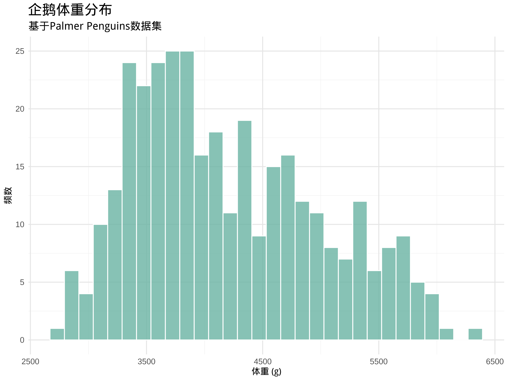
geom_point()(散点图)： 展示两个数值变量之间的关系。用点的 x 轴和 y 轴位置表示两个变量的值。ggplot(data = penguins, aes(x = bill_length_mm, y = body_mass_g, color = species)) + geom_point(alpha = 0.7, size = 3) + scale_color_manual(values = custom_colors, labels = c("阿德利企鹅", "帽带企鹅", "巴布亚企鹅")) + labs( title = "企鹅嘴峰长度与体重的关系", subtitle = "按企鹅种类分类", x = "嘴峰长度 (mm)", y = "体重 (g)", color = "企鹅种类" )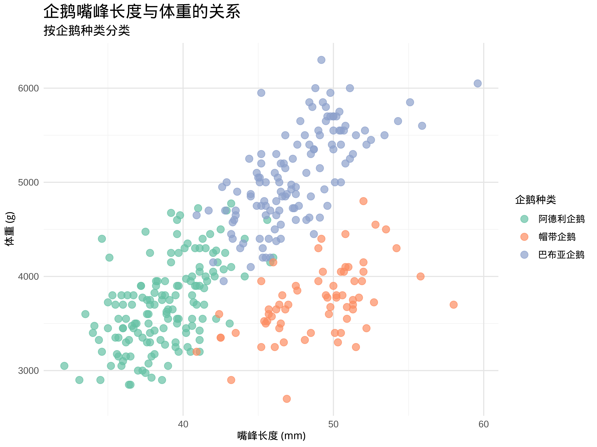
geom_boxplot()(箱线图)： 展示数值变量在不同组别的分布，检测异常值。箱线图用箱子和须线展示数据的四分位数、中位数、上下限等信息，可以直观地比较不同组别数据的分布差异，并识别潜在的异常值。ggplot(data = penguins, aes(x = species, y = body_mass_g, fill = species)) + geom_boxplot(alpha = 0.7) + scale_fill_manual(values = custom_colors, labels = c("阿德利企鹅", "帽带企鹅", "巴布亚企鹅")) + labs( title = "不同种类企鹅的体重分布", subtitle = "使用箱线图展示", x = "企鹅种类", y = "体重 (g)", fill = "企鹅种类" ) + theme(axis.text.x = element_text(angle = 45, hjust = 1))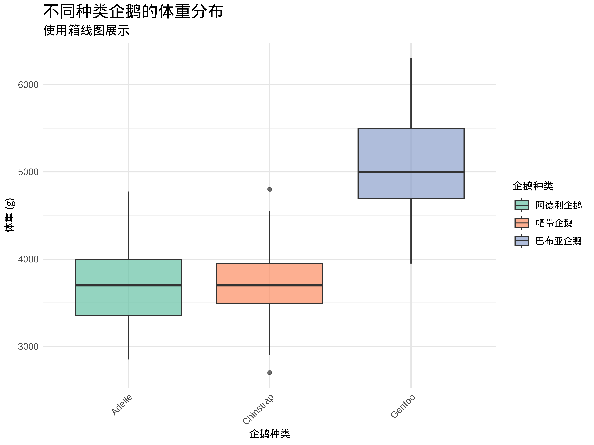
基本图形属性设置
颜色 (color, fill)：
color属性： 通常用于设置线条、点、边框的颜色。fill属性： 通常用于设置填充区域的颜色，例如柱子、箱子、多边形等。- 可以在
geom_xxx()函数中直接设置固定颜色值 (例如color = "red",fill = "blue")，也可以在aes()函数中将颜色属性映射到数据变量 (例如aes(color = species),aes(fill = species))，让颜色根据数据变量的取值而变化。
大小 (size)： 设置点的大小、线条的粗细等。可以在
geom_xxx()函数中直接设置固定大小值 (例如size = 3)，也可以在aes()函数中将大小属性映射到数据变量 (例如aes(size = body_mass_g))，让大小根据数据变量的取值而变化。形状 (shape)： 设置点的形状。
ggplot2提供了多种点的形状，可以通过数字或形状名称指定 (例如shape = 16或shape = "circle"). 可以在geom_point()函数中直接设置固定形状值 (例如shape = 16)，也可以在aes()函数中将形状属性映射到数据变量 (例如aes(shape = species))，让形状根据数据变量的取值而变化。透明度 (alpha)： 设置图形的透明度，取值范围为 0-1，越小越透明。可以用于处理数据重叠的问题，例如在散点图中，当数据点重叠较多时，可以降低透明度，使图形更清晰。可以在
geom_xxx()函数中直接设置固定透明度值 (例如alpha = 0.5)。
演示：使用 ggplot2 绘制基本图表
# 1. 直方图：展示企鹅体重的分布
ggplot(data = penguins, aes(x = body_mass_g)) +
geom_histogram(bins = 30, fill = "#69b3a2", color = "white", alpha = 0.8) +
labs(
title = "企鹅体重分布",
subtitle = "基于Palmer Penguins数据集",
x = "体重 (g)",
y = "频数"
)# 2. 散点图：展示企鹅嘴峰长度和体重的关系
ggplot(data = penguins, aes(x = bill_length_mm, y = body_mass_g, color = species)) +
geom_point(alpha = 0.7, size = 3) +
scale_color_manual(values = custom_colors,
labels = c("阿德利企鹅", "帽带企鹅", "巴布亚企鹅")) +
labs(
title = "企鹅嘴峰长度与体重的关系",
subtitle = "按企鹅种类分类",
x = "嘴峰长度 (mm)",
y = "体重 (g)",
color = "企鹅种类"
)# 3. 箱线图：比较不同种类企鹅的体重分布
ggplot(data = penguins, aes(x = species, y = body_mass_g, fill = species)) +
geom_boxplot(alpha = 0.7) +
scale_fill_manual(values = custom_colors,
labels = c("阿德利企鹅", "帽带企鹅", "巴布亚企鹅")) +
labs(
title = "不同种类企鹅的体重分布",
subtitle = "使用箱线图展示",
x = "企鹅种类",
y = "体重 (g)",
fill = "企鹅种类"
) +
theme(axis.text.x = element_text(angle = 45, hjust = 1))
数据可视化练习
- 练习任务：
- 使用
ggplot2包，选择合适的可视化方法 (直方图、散点图、箱线图)，对示例数据进行可视化探索。
- 使用
- 尝试调整图形属性 (颜色、标题、标签等)，美化图形 (这部分下节课会详细介绍)。
- 鼓励使用 AI 工具 (Cursor) 辅助
ggplot2代码编写和图形美化。 例如，让 AI 生成绘制特定类型图形的ggplot2代码，或者提供美化图形的建议。
第六次课：可视化进阶、数据探索与可视化综合应用
ggplot2 包：数据可视化进阶
在第五次课，我们学习了 ggplot2 的基本语法和常用几何对象。为了创建更精美、更信息丰富的可视化图表，我们还需要学习 ggplot2 的更多高级功能。
图例和轴标签设置： labs() 函数
labs() 函数用于设置图形的各种标签，包括标题 (title)、副标题 (subtitle)、坐标轴标签 (x 轴和 y 轴)、图例标题 (legend title) 等。
ggplot(data = penguins, aes(x = bill_length_mm, y = body_mass_g, color = species)) +
geom_point() +
labs(
title = "企鹅嘴峰长度与体重的关系",
subtitle = "不同种类企鹅的散点图",
x = "嘴峰长度 (mm)",
y = "体重 (g)",
color = "企鹅种类"
)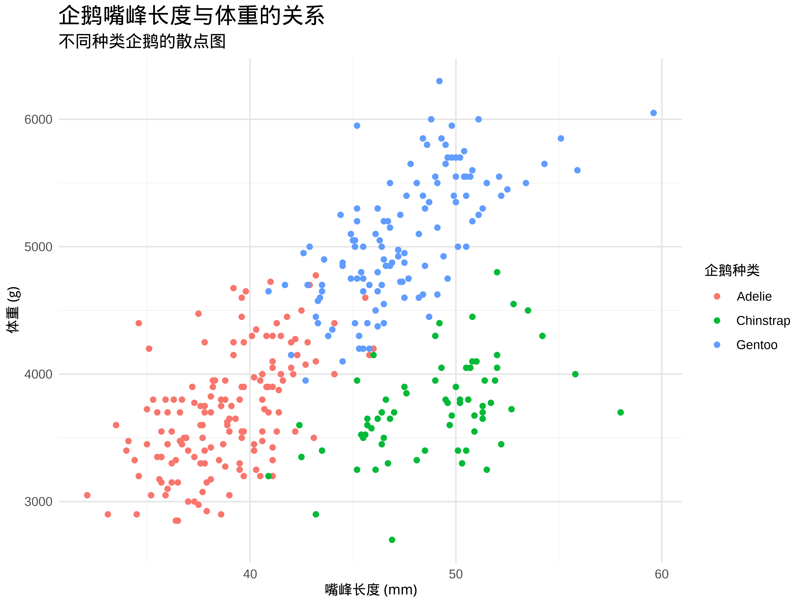
主题设置： theme_xxx() 函数和 theme() 函数
ggplot2 提供了主题 (theme) 系统，用于控制图形的整体外观风格，例如背景颜色、网格线、字体、字号、边框、图例位置等。
预设主题：
theme_xxx()函数:ggplot2内置了一些预设主题，例如theme_minimal(),theme_bw(),theme_classic(),theme_void()等。这些预设主题提供了不同的视觉风格，可以快速改变图形的整体外观。ggplot(data = penguins, aes(x = body_mass_g)) + geom_histogram() + theme_minimal() # 使用 minimal 主题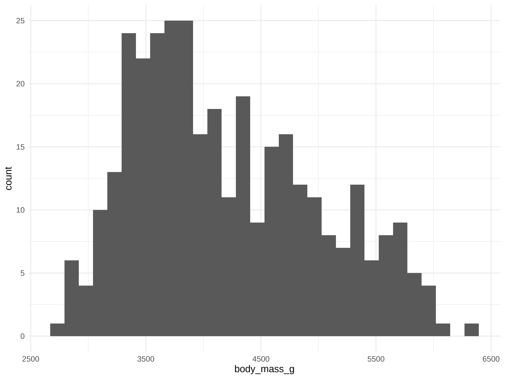
自定义主题：
theme()函数:theme()函数允许用户自定义主题的各个元素，例如背景、面板、坐标轴、网格线、文本、图例等。通过theme()函数，可以精细地控制图形的每一个细节，实现高度定制化的可视化效果。ggplot(data = penguins, aes(x = body_mass_g)) + geom_histogram(fill = "lightblue", color = "black") + theme( panel.background = element_rect(fill = "lightyellow"), # 设置背景颜色 panel.grid.major.x = element_line(color = "gray", linetype = "dashed"), # 设置 x 轴主要网格线 axis.text.x = element_text(angle = 45, hjust = 1) # 设置 x 轴刻度标签角度 )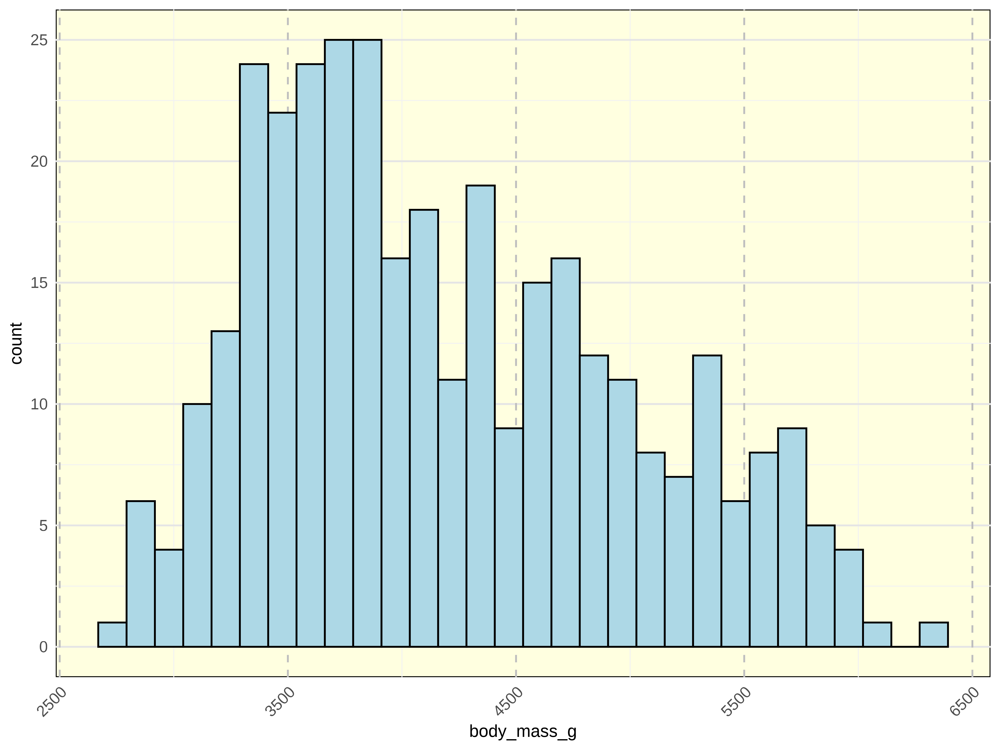
刻度设置： scale_x_xxx() 和 scale_y_xxx() 函数
scale_x_xxx() 和 scale_y_xxx() 函数用于设置 x 轴和 y 轴的刻度，包括刻度范围、刻度标签、刻度格式等。
- 常用刻度函数:
scale_x_continuous(),scale_y_continuous(): 连续型刻度，用于数值型变量。scale_x_discrete(),scale_y_discrete(): 离散型刻度，用于分类型变量。scale_x_log10(),scale_y_log10(): 对数刻度，用于展示数据跨度较大的数据。scale_x_date(),scale_y_date(): 日期刻度，用于日期型变量。scale_x_datetime(),scale_y_datetime(): 日期时间刻度，用于日期时间型变量。
ggplot(data = penguins, aes(x = body_mass_g)) + geom_histogram() + scale_x_log10(labels = scales::comma) # 设置 x 轴为对数刻度，并使用逗号分隔的标签格式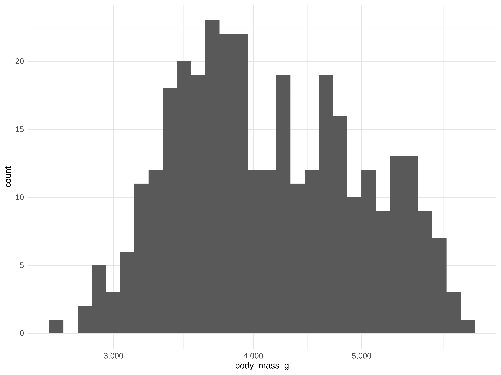
labels参数： 设置刻度标签的格式，可以使用scales包提供的格式化函数，例如scales::comma(逗号分隔),scales::percent(百分比格式) 等。
使用技巧
- 调整刻度范围: 使用
limits参数可以调整刻度的显示范围，例如scale_x_continuous(limits = c(0, 10000))。 - 自定义刻度标签: 使用
labels参数可以自定义刻度标签的文本内容，例如scale_x_continuous(labels = c("Low", "Medium", "High"))。 - 设置刻度格式: 使用
labels参数和scales包提供的格式化函数，可以设置刻度标签的显示格式，例如逗号分隔、百分比、货币符号等。 - 使用对数刻度: 当数据跨度较大，或数据分布偏斜时，可以考虑使用对数刻度，使图形更易于阅读和理解。
- 日期时间刻度: 对于日期时间型变量，应使用日期时间刻度函数，例如
scale_x_date(),scale_x_datetime()，ggplot2会自动处理日期时间的刻度显示。
分面图： facet_wrap() 和 facet_grid() 函数
分面 (facet) 是将数据按照一个或多个分类变量分组，为每个分组绘制一个子图，并将所有子图排列在一个页面上。分面图可以有效地展示不同分组数据的分布或关系，便于比较不同组别之间的差异。
facet_wrap()函数: 单变量分面，将数据按照一个分类变量分组，并将子图按行或按列排列 (通常是按行排列，自动换行)。ggplot(data = penguins, aes(x = body_mass_g, fill = species)) + geom_histogram(alpha = 0.5, position = "identity") + facet_wrap(~ species, ncol = 2) # 按企鹅种类分面，每行 2 个子图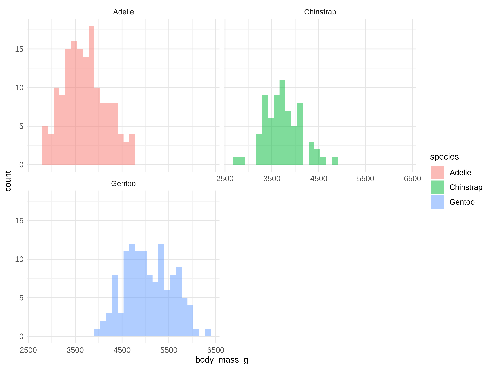
~ species： 分面公式，~符号后面跟分类变量名。ncol参数： 设置每行子图的数量。
facet_grid()函数: 双变量分面，可以将数据按照两个分类变量分组，行和列分别对应一个分类变量，形成网格状的分面图。ggplot(data = penguins, aes(x = body_mass_g, fill = species)) + geom_histogram(alpha = 0.5, position = "identity") + facet_grid(species ~ sex) # 按企鹅种类 (行) 和性别分组 (列) 分面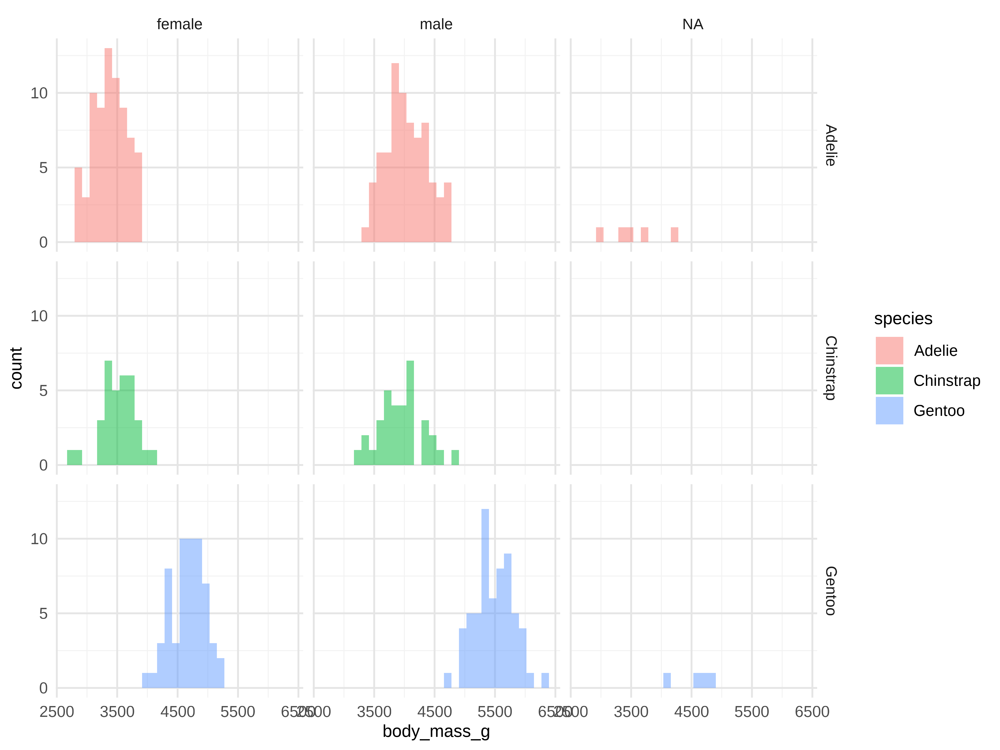
species ~ sex： 分面公式，~符号左边是行分面变量，右边是列分面变量。
使用技巧
- 选择合适的分面变量: 分面变量应选择能够有效区分不同数据子集的分类变量，例如类别、组别、时间段等。
- 控制分面数量: 分面数量不宜过多，否则子图会变得太小，难以阅读。通常情况下，分面数量控制在 10-20 个以内为宜。
- 结合几何对象和图形属性: 分面图可以和各种几何对象 (例如直方图、散点图、箱线图) 和图形属性 (例如颜色、形状、大小) 结合使用，展示更丰富的数据信息。
- 比较不同分组数据: 分面图最主要的应用场景是比较不同分组数据的分布或关系，例如比较不同类别产品的销售额分布、不同地区人群的收入水平等。
- 探索多维数据: 分面图可以将多维数据 (例如包含多个分类变量的数据) 降维到二维平面上进行可视化，便于探索多维数据中的模式和规律。
统计变换：stat_summary() 和 stat_smooth() 函数
ggplot2 提供了多种统计变换函数，用于在图形中添加统计信息，如统计摘要、平滑曲线等。这些函数以 stat_ 开头，可以与几何对象结合使用。
stat_summary()函数：用于在图形中添加统计摘要信息，如均值、中位数等。
ggplot(penguins, aes(x = species, y = body_mass_g)) +
geom_boxplot() +
stat_summary(fun = mean, geom = "point", color = "red")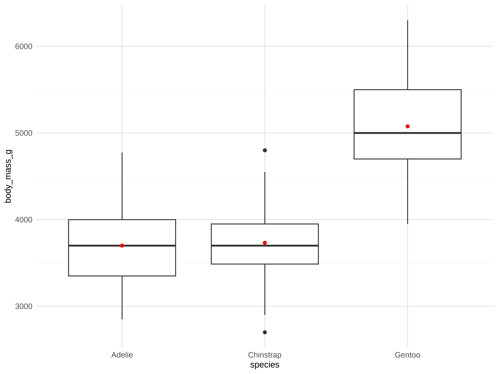
使用技巧
- 选择合适的统计函数:
fun参数允许你指定任何统计函数，例如mean(均值),median(中位数),sd(标准差),IQR(四分位距) 等。你也可以自定义函数来计算更复杂的统计量。 - 选择合适的几何对象:
geom参数决定了统计摘要的展示形式。常用的几何对象包括："point": 用点表示均值或中位数等。"errorbar": 添加误差线，展示数据的变异性 (例如标准差)。"crossbar": 用带中心横线的柱状图表示均值和置信区间。"boxplot": 绘制箱线图 (实际上geom_boxplot()已经做了统计摘要，但stat_summary(geom = "boxplot")也是可以的)。"line"或"path": 连接不同组别的统计量，展示趋势。
- 自定义外观: 你可以使用
color,size,shape,linetype,fill等图形属性来自定义统计摘要的外观，使其更符合你的需求。 - 分组统计:
stat_summary()会自动根据图形的分组 (例如通过aes(color = ...)或facet_wrap()) 进行分组统计，分别计算每个组的统计摘要。 - 添加多个统计量: 你可以多次调用
stat_summary()函数，添加多个不同的统计量，例如同时展示均值和中位数。 - 结合其他几何对象:
stat_summary()可以和各种几何对象结合使用，例如在散点图上添加均值点，在箱线图上标记均值点等。
stat_smooth()函数：用于在散点图中添加平滑曲线，展示变量间的趋势关系。
ggplot(penguins, aes(x = body_mass_g, y = flipper_length_mm)) +
geom_point() +
stat_smooth(method = "loess", color = "blue") # 添加 LOESS 平滑曲线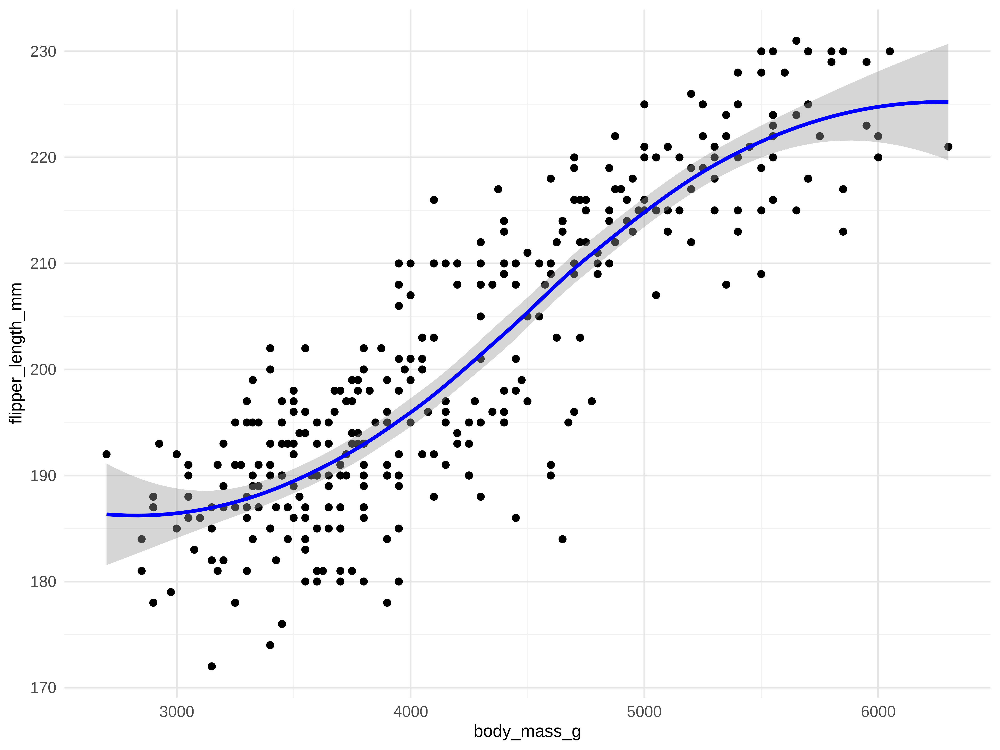
使用技巧
- 选择合适的平滑方法:
method参数可以选择不同的平滑方法，例如"loess"(局部加权回归，默认方法，适合非线性关系),"lm"(线性回归，适合线性关系),"glm"(广义线性模型),"gam"(广义加法模型) 等。根据数据的特点和分析目的选择合适的平滑方法。 - 调整平滑程度: 对于
"loess"方法，span参数可以控制平滑程度，取值范围为 0-1，越小越灵活 (曲线越弯曲)，越大越平滑。 - 添加置信区间:
se = TRUE(默认值) 会在平滑曲线周围添加置信区间阴影，展示平滑估计的不确定性。se = FALSE则不显示置信区间。 - 分组平滑:
stat_smooth()会自动根据图形的分组 (例如通过aes(color = ...)或group = ...)分组) 进行分组平滑，分别拟合每个组的平滑曲线。 - 自定义外观: 可以使用
color,linetype,size等图形属性来自定义平滑曲线和置信区间的颜色、线型、粗细等外观，使其更符合你的需求。 - 理解平滑曲线的含义: 平滑曲线展示的是数据的大致趋势和模式，帮助我们发现变量之间的潜在关系。但需要注意，平滑曲线并不代表真实的函数关系，只是一种数据趋势的近似展示。
- 与其他几何对象结合:
stat_smooth()通常与geom_point()结合使用，在散点图的基础上添加平滑曲线，更清晰地展示变量之间的关系。
tidyverse 生态：数据处理和可视化的综合应用
案例：企鹅数据分析
让我们通过一个完整的案例，展示如何使用 dplyr, tidyr, ggplot2 进行数据探索和可视化分析。
# 1. 数据清洗和预处理
penguins_clean <- penguins %>%
# 选择需要的列
select(species, island, bill_length_mm, bill_depth_mm, body_mass_g, sex) %>%
# 去除缺失值
filter(!is.na(bill_length_mm), !is.na(body_mass_g), !is.na(sex))
# 2. 按种类和性别统计平均体征
species_sex_stats <- penguins_clean %>%
group_by(species, sex) %>%
summarise(
mean_bill_length = mean(bill_length_mm),
mean_body_mass = mean(body_mass_g),
n_penguins = n()
) %>%
ungroup()
# 3. 可视化展示
# 3.1 不同种类企鹅的体重分布
ggplot(penguins_clean, aes(x = species, y = body_mass_g)) +
geom_boxplot(fill = "lightblue", alpha = 0.5) +
stat_summary(fun = "mean", geom = "point", color = "red", size = 3) +
theme_minimal() +
labs(
title = "不同种类企鹅的体重分布",
x = "企鹅种类",
y = "体重 (g)"
) +
theme(axis.text.x = element_text(angle = 45, hjust = 1))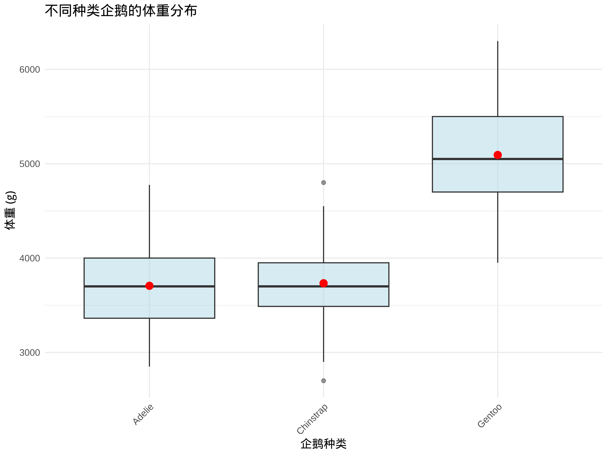
# 3.2 不同种类企鹅的嘴峰长度和体重关系
ggplot(penguins_clean, aes(x = bill_length_mm, y = body_mass_g, color = species)) +
geom_point() +
geom_smooth(method = "lm") +
facet_wrap(~ species, scales = "free_y") +
theme_minimal() +
labs(
title = "不同种类企鹅的嘴峰长度和体重关系",
x = "嘴峰长度 (mm)",
y = "体重 (g)",
color = "企鹅种类"
)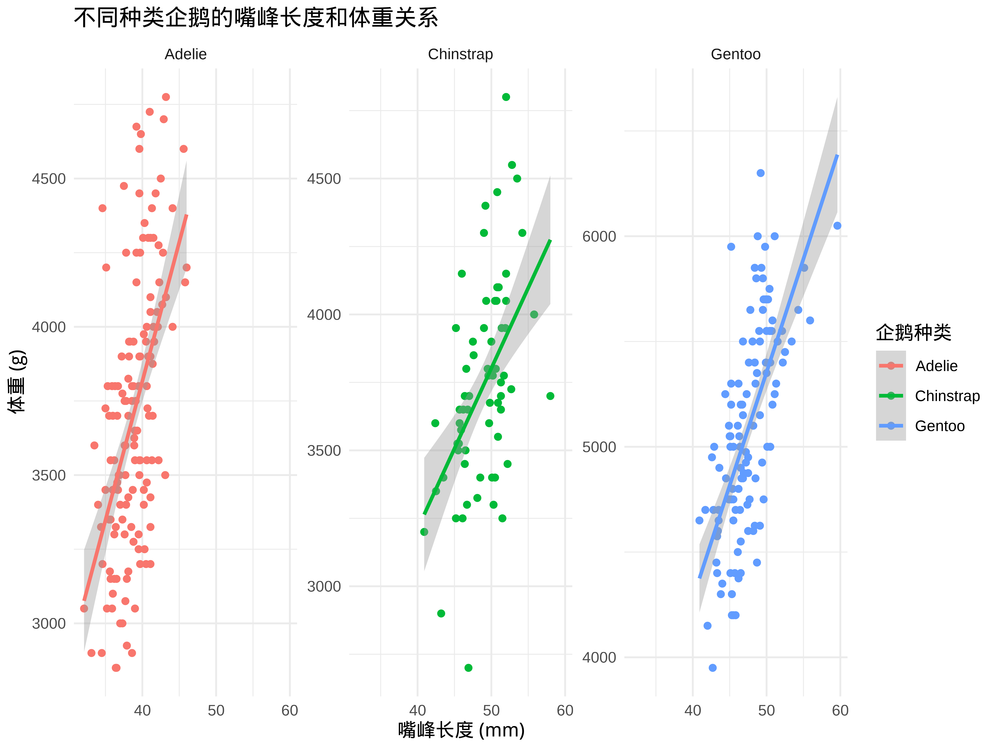
数据探索与可视化练习
- 练习任务：
- 使用
dplyr和tidyr对数据进行清洗和整理 - 使用
ggplot2创建至少三种不同类型的可视化图表 - 尝试使用
ggplot2的高级功能美化图表 - 探索数据中的有趣模式和规律
- 使用
- 建议探索方向：
- 分析不同类型企鹅的体重分布和趋势
- 探索体重与其他变量 (如嘴峰长度、性别) 的关系
- 研究企鹅种类随时间的变化趋势
- 鼓励使用 AI 工具 (Cursor) 辅助：
- 生成数据处理和可视化代码
- 优化图表美化方案
- 解释发现的数据模式
课后作业 (第三周)
- 继续深入探索自己项目的数据集：
- 使用
dplyr,tidyr进行数据清洗和整理 - 处理缺失值、异常值等数据质量问题
- 创建新的变量，进行必要的数据转换
- 使用
- 使用
ggplot2包进行可视化探索：- 选择合适的图表类型，展示数据的分布和关系
- 使用分面图比较不同组别的数据特征
- 添加统计信息，如均值线、趋势线等
- 美化图表，添加标题、标签、调整主题等
- 撰写项目一的初步分析报告，包括：
- 项目主题和目标
- 数据来源和描述
- 数据清洗和预处理步骤
- 数据探索和可视化结果
- 初步的发现和洞察
- 思考题：
- 通过数据探索和可视化，你发现了哪些有趣的模式或规律？
- 这些发现对你的研究问题有什么启示？
- 还有哪些方面需要进一步分析？
AI 辅助学习建议 (第三周)
- 数据清洗和整理：
- 让 AI 生成
dplyr和tidyr代码 - 请 AI 解释数据转换的逻辑
- 使用 AI 检查数据质量问题
- 让 AI 生成
- 数据可视化：
- 让 AI 推荐适合的图表类型
- 请 AI 生成
ggplot2代码 - 使用 AI 优化图表美化方案
- 数据分析报告：
- 让 AI 帮助组织报告结构
- 请 AI 解释数据发现的含义
- 使用 AI 改进报告的表达